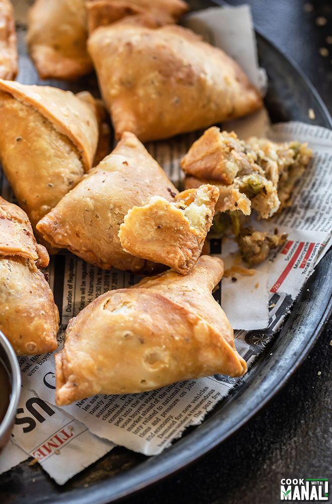

Top 5 Best Recipes Made By Jashan
Samosa Recipe
Pasta Recipe
Momos Recipe
Spring Roll Recipe
Burger Recipe
Samosa Recipe – How to Make Perfect Samosa
Samosa, does it need any introduction? I don’t think so!
The triangular shaped flaky pastry filled with spicy potato, chicken or lamb filling is a popular snack not only in India but in several countries of the world.
Because samosa is so so common in India (you literally get samosa and chai at every other street corner), I always considered it to be a quintessential Indian delicacy.
But only later I read that it has its origin in Middle East and it was introduced to India during the Delhi Sultanate rule.
It was later adapted as a vegetarian snack with spicy potato filling in India (which is what is most popular in northern India).
Anyway whatever the origin was, I can confidently say that samosa, especially Aloo Samosa is the most popular snack back home.
It’s there in every party, office meeting, chai meet-ups, you name it and samosa will be there!

Tips to Make The Perfect Samosa
- Mixing the oil with flour is important– rub it for good 3 to 4 minutes, do so by rubbing between your hands until the oil is well incorporated with the flour. 😇
- Don’t overwork the dough– you only need to bring the dough together. If you overwork it, the samosa will be hard. 😍
- Dough should be stiff– soft dough will not give crispy samosa. 😂
- Let the dough rest for around 40 minutes– always remember to let the dough rest for at least 30 to 40 minutes before you start making the samosa.😏
- Roll the dough evenly and roll it thin– try to roll the dough thin and evenly. If the dough is rolled thick, it will take a long time for the dough to get cooked. Also we all like thin crispy edges of the samosa, agree? 😎
- Do not use any flour while rolling the samosa, you can apply little oil on your rolling pin. 😏
- Fry the samosa on low heat – the most important thing- always fry the samosa on low heat (not high, not medium), that way they will turn crisp. 😂
Instant Pot penne is saucy and creamy, and comes together in under 20 minutes.
INGREDIENTS
- 1 (about 24-ounce) jar marinara sauce
- 1/2 teaspoon kosher salt
- 12 ounces dried penne pasta
- 1 1/2 cups water
- 1/2 cup heavy cream
INSTRUCTIONS
- Add 1 jar marinara sauce and 1/2 teaspoon kosher salt to a 6-quart or larger Instant Pot or electric pressure cooker and stir to combine. Scatter 12 ounces dried penne pasta over the sauce in an even layer. Do not stir from this point on.
- Pour 1 1/2 cups water into the marinara jar, cover, and shake gently. Pour the water over the pasta. Remember — no stirring here. Lock the lid on and make sure the pressure valve is set to seal. Set to cook under HIGH pressure for 6 minutes. It will take about 13 minutes to come up to pressure.
- When the cook time is up, quick release the pressure. Turn the pressure cooker off. Pour in 1/2 cup heavy cream and stir to combine.
Momos Recipe | Veg Momos
Momos are a popular street food in northern parts of India. These are also known as Dim Sum and are basically dumplings made from flour with a savory stuffing. Learn to make these popular Tibetan recipe of easy veg momos from scratch with two folding techniques. The momos recipe is also vegan

About Veg Momos Recipe
- What are Momos? As I have mentioned above, momos are dumplings made with flour and a savory stuffing. This stuffing can be made with veggies, sea-food, chicken or paneer (cottage cheese) .
- Method of cooking: Momos can be steamed, baked or deep-fried. We prefer steamed momos over the fried ones. This recipe is for making steamed momos.
- Savory stuffing: This veg momo recipe has a stuffing of mix veggies. The veggies I prefer to add are a mix of cabbage, carrots, french beans, capsicum and onions.Sometimes I also add white button mushrooms for a meaty texture and they also give a nice umami flavor.
- Dough: The dough for the dumplings is made with all-purpose flour. But you can even make the dough with whole wheat flour.
- Taste: In this recipe, the savory veggie filling has a balanced taste and is lightly spiced, so that it accompanies any spicy and hot sauce very well.
Spring Rolls | Crispy Veg Spring Roll Recipe
These Spring rolls are a popular Chinese snack of crispy rolls filled with a savory mixed vegetables stuffing. Hot handheld pockets of spiced veggies are wrapped and deep fried for an endlessly adaptable and delightfully dippable snack. This yummy recipe for crispy vegan Veg Spring Rolls can be made with whatever veggies you have on hand. I’m excited to show you how to make your favorite Indo-Chinese street food at home using just a few simple ingredients!

About Spring Rolls
Spring rolls are called so as they were made during the spring season and also for the Spring Festival in China. They are made with some of the fresh vegetables that appear during the spring season.
The mixed vegetables are filled inside a thin wrapper or pastry and shaped into a cylindrical roll. Depending on the type of wrapper used, the rolls can be served fresh or cooked further.
There are so many variants of spring rolls. So you will find may kinds of spring roll recipes. The can be savory, sweet and even non-fried and fresh spring rolls like the Vietnamese spring rolls. The stuffing ingredients also vary with each Asian country.
Burger Recipe | Veggie Burger
This Burger Recipe covers everything needed to make delightful veggie burgers from scratch, including how to prepare and pan fry delicious homemade vegetable patties. And because no veggie burger is complete without its own special sauce, I have included instruction on how to make the perfect tangy, sweet and spicy mayonnaise dressing.

How to make Veggie Burger from scratch
- 1. Preparing breadcrumbs
If you have breadcrumbs then simply skip these steps and move on to the steps of preparing veggies below. For a more crispy texture, I recommend using panko bread crumbs.
1. Break 6 to 7 slices of bread and add in a mixer or dry grinder. You can use a few days old bread like white, brown, multi grain or whole wheat bread.